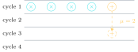

; ALAP starts it as late as possible within
; ALAP starts it as late as possible within  of an operation says how much freedom it has, and zero-mobility operations form the critical path.
of an operation says how much freedom it has, and zero-mobility operations form the critical path.Method
With  the execution delay (cycles) of operation :
the execution delay (cycles) of operation :
- ASAP: ; , in topological order. The latency is .
- ALAP for a bound : ; , in reverse topological order (select a vertex whose successors are all scheduled).
- Mobility: . With , operations with are critical.
These are the arrival and required times of timing analysis, counted in cycles.
Example
The solver graph with all delays 1, :
| op | v1 | v2 | v3 | v4 | v5 | v6 | v7 | v8 | v9 | v10 | v11 |
|---|---|---|---|---|---|---|---|---|---|---|---|
| ASAP | 1 | 1 | 2 | 1 | 2 | 1 | 3 | 4 | 2 | 1 | 2 |
| ALAP | 1 | 1 | 2 | 2 | 3 | 3 | 3 | 4 | 4 | 3 | 4 |
| mobility | 0 | 0 | 0 | 1 | 1 | 2 | 0 | 0 | 2 | 2 | 2 |
The critical path is v1, v2 → v3 → v7 → v8 (mobility 0). ASAP needs four multipliers in cycle 1; the mobility of v4, v5, v6 is exactly the freedom a resource-constrained scheduler uses to spread them.
Picture

The addition can move from its ASAP cycle to its ALAP cycle without increasing the latency.
Intuition
ASAP and ALAP are the two extremes; everything a real scheduler does happens between them.
Pitfall
ASAP is optimal for latency only with unlimited resources: it puts all multiplications in the first cycle, which may need far more multipliers than the design can afford.